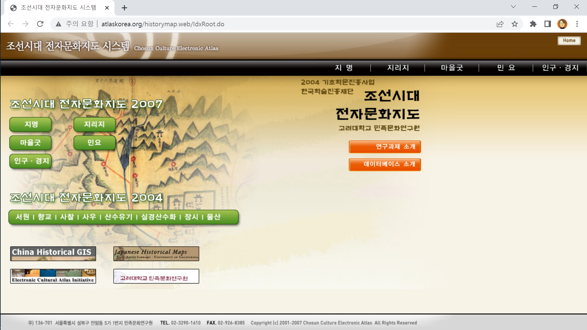
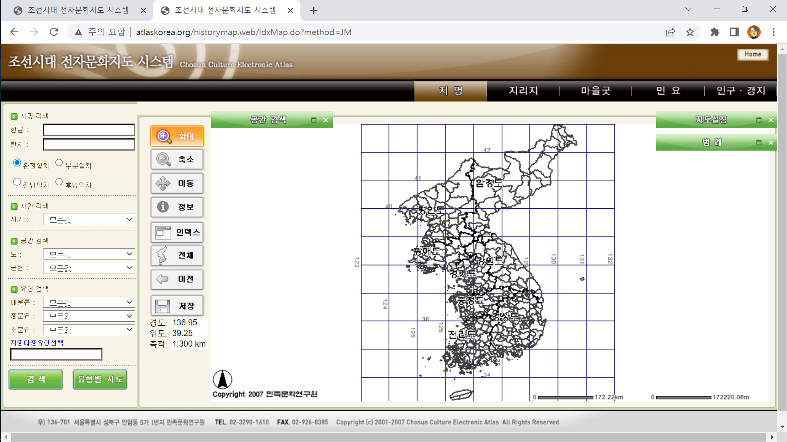
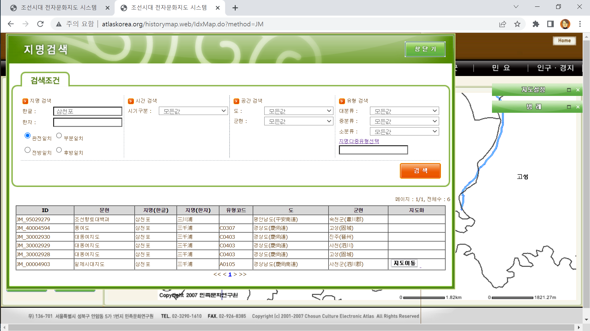
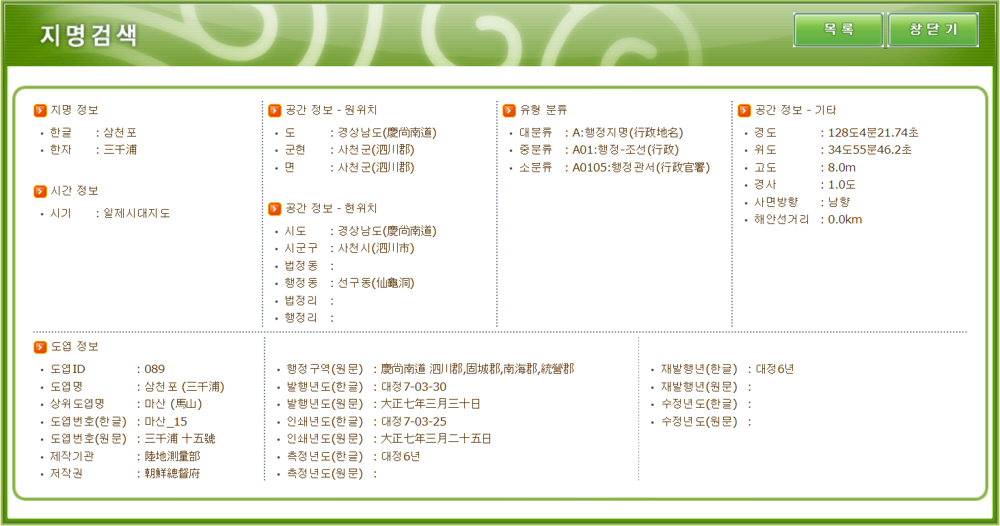
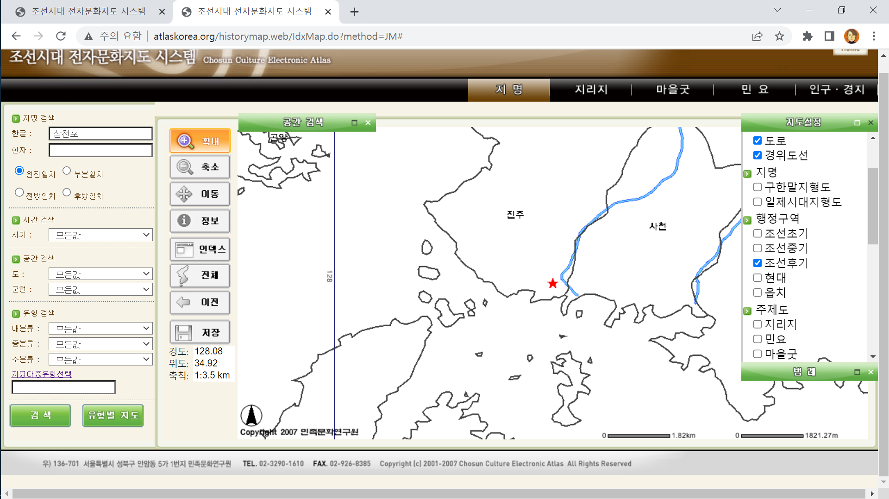
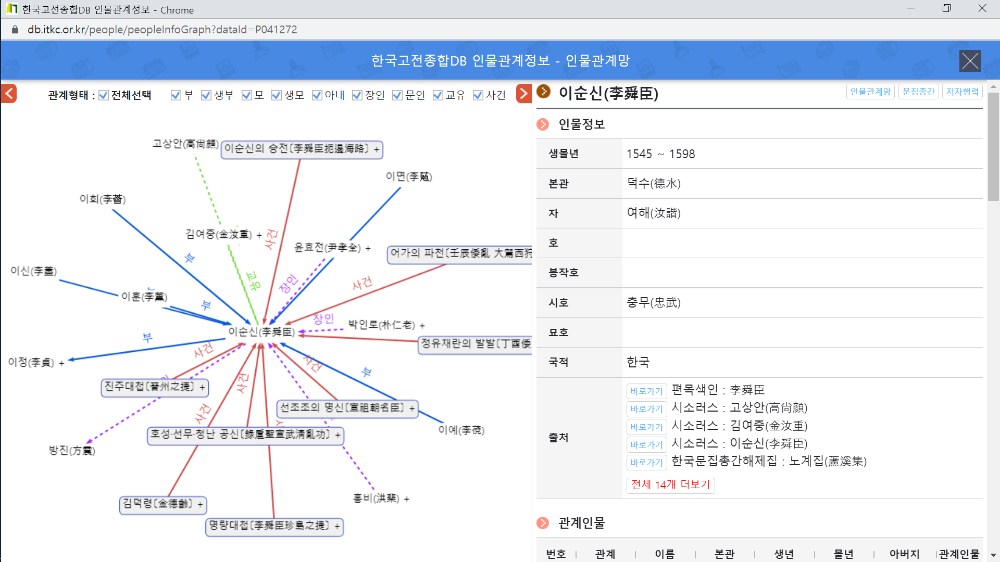
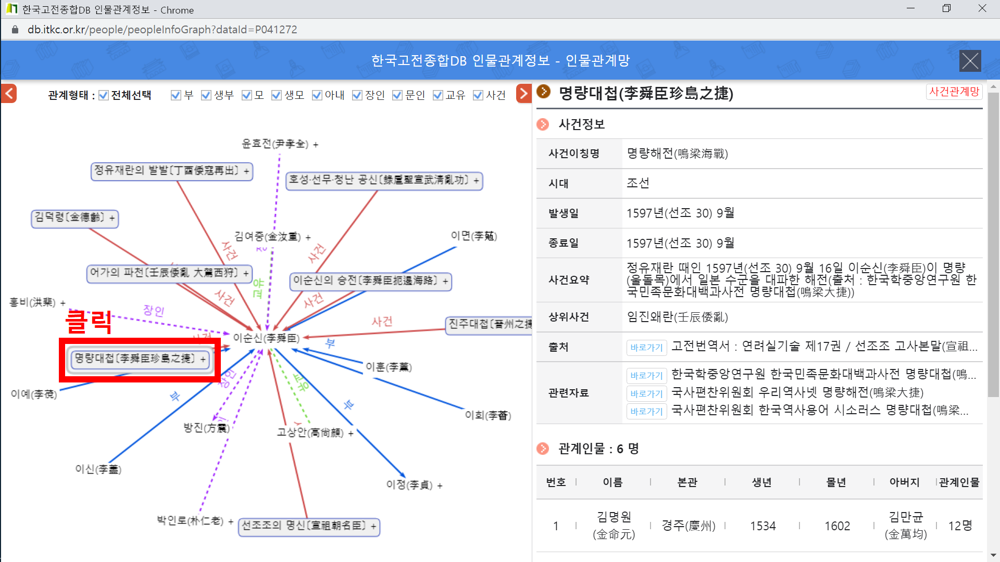

멀티미디어콘텐츠의 이해
Presented by 전가람, 지해인
목차
인문학에서 디지털 인문학으로:
시각적 인문학(Visual Humanities)을 위하여
가상현실과 시각적 스토리텔링
- 인문지식은 수천 년 동안 ‘글’이라는 이름의 문자 중심 텍스트 형식으로 기록되고 전승
- 인터넷과 같은 정보통신 네트워크가 가장 영향력 있는 지식 유통의 무대가 되면서, 시각적 인문학은 인문지식을 전달하는 텍스트가 문자에만 국한되지 않고 디지털 공간에서 시각적인 미디어를 통해 표현될 수 있게 함
가상현실과 시각적 스토리텔링
- 글(Text)의 시대에 융성했던 인문학이 데이터의 시대에도 여전히 유효하도록 할 수 있는 방법은?
- 단순히 논문 및 단행본 자료를 디지털상으로 옮기는 매체 전환을 의미하는 것이 아니라, 인문지식을 다루는 사람이 데이터 다루는 기술을 습득해서 지식의 재창조를 이뤄낼 수 있는 “인문학 연구와 교육의 디지털 전환(Digital Transformation)”을 의미
가상현실과 시각적 스토리텔링
- 역사적인 유래가 담긴 어떤 역사·문화도시에 대한 정보를 얻고자 했을 때, 그것을 종합적으로 조사하여 기록한 학술 보고서를 살펴본다고 가정하자.
- 보고서는 대부분 문자로 기술되어 있고, 참고 도판 몇 장 정도가 삽입되어 있는 정도이므로 묘사하려는 환경과 현장의 모습을 생생하게 확인할 수는 없음
가상현실과 시각적 스토리텔링
- 역사·문화도시에서 이야기되는 모든 사실과 마을의 자연 환경, 역사적인 유래와 유적, 그곳 주민들의 생업과 문화적인 이벤트, 특산물 등을 웹상에서 시각적으로 확인하는 장치를 마련한다면?
- 딱딱했던 학술 보고서는 그 자체로 즐기면서 배우는 문화콘텐츠로서의 기능을 발휘할 수 있게 될 것!
데이터의 시각화
- 데이터 시각화란?
- 시각적 인문학의 한 분야로 의미를 갖는 인문 데이터의 관계망이나 통계적 수치를 그래프 형태로 시각화하는 것
- 인문 연구의 분야에서 탐구하는 사실을 시각적으로 표현하기 위해서는 어떠한 형태의 데이터를 만들어야 할까?
- 표현하고자 하는 주제에 따라 시각화의 방법도 다양하게 선택될 수 있지만, 개체와 개체 사이의 관계를 그래프로 보여주는 네트워크 시각화는 가장 일반적으로 활용되고 있는 데이터 시각화 기술 중의 하나
데이터의 시각화
- 노드(node), 링크(link)
- 네트워크 그래프를 그리려면 두 종류의 데이터가 필요
- ‘노드’는 그물망 속에서 연결선이 만나는 접점(node)이 되는 개체의 목록이고, ‘링크’는 개체와 개체 사이를 연결(link)하는 관계성에 대한 목록
- SNS의 확산과 더불어 그 네트워크 양태를 분석하고자 하는 수요가 늘면서 네트워크 시각화 기술의 활용이 일반화되고, 이를 도와주는 다양한 소프트웨어들이 개발됨
- 인문학 연구와 교육도 이러한 시각화 기술의 도입을 통해 효과적인 표현과 의미 있는 발견을 추구할 수 있음
하이퍼미디어와 인문지식
- 하이퍼텍스트(hypertext)
- 의미의 연결고리를 좇아 무수한 텍스트 조각들이 자유롭게 연결되어 새로운 이야기를 만드는 것
- 하이퍼미디어(hypermedia)
- 디지털 환경에서 문자 텍스트와 함께 다른 미디어의 콘텐츠를 종합적으로 엮어내는 것
- 하이퍼미디어는 개별적인 모노미디어들을 의미 있는 문맥(context)으로 엮어 내는 ‘조합의 기술’이자, 그 연결이 종래의 문자 텍스트에 한정되지 않고 오감으로 체험하는 멀티미디어 콘텐츠로까지 확장되는 것을 의미
하이퍼미디어와 인문지식
- 전자지도 : 대상 세계의 공간적인 문맥을 보여주는 문맥 구현자의 역할
- 파노라마 영상 : 특정 장소에서 여러 가지 사물의 공간적 연관성을 보여주는 문맥 구현자의 역할
- 전자연표 : 사건의 시간적 선후나 인과 관계를 보여주는 문맥 구현자의 역할
- 네트워크 그래프 : 인물, 사건, 장소 등 다양한 개체들의 연관 관계를 그래프로 보여주는 문맥 구현자의 역할
모노미디어에서 멀티미디어로
- 멀티미디어(multimedia)란?
- 추후 작성 예정
인문콘텐츠 히스토리
- 인문콘텐츠란?
- 2002년 초 인문사회연구회 인문정책 연구과제 공모에서 처음 사용된 용어
- 인문콘텐츠, 역사콘텐츠와 같은 단순 범주적 구분이 아닌, 콘텐츠 창출의 원천이 인문학임을 밝힌 것
- 인문콘텐츠의 조건
- 콘텐츠의 원천이 인문학적 사고 및 축적물일 것
- 콘텐츠 개발 주체로서 인문학 전문가의 역할이 중요
- 인문학적 성과를 계승하며 새롭게 가치 창출
인문콘텐츠 히스토리: 사례 (1)
- 조선시대 전자문화지도 시스템
- 조선시대의 문화정보를 시간(Time)·공간(Place)·주제(Subject)의 입체 구조로 조직한 데이터베이스
- 2002년부터 5년간, 총 2기에 걸쳐 진행된 연구과제 결과물
- 지명, 지리지, 마을굿, 민요, 인구·경지 데이터베이스로 구성
링크 : 조선시대 전자문화지도 시스템
인문콘텐츠 히스토리: 사례 (1)
조선시대 전자문화지도 시스템 홈페이지
인문콘텐츠 히스토리: 사례 (1)
지명 데이터베이스 서비스 화면
인문콘텐츠 히스토리: 사례 (1)
‘삼천포’ 검색 결과 다양한 출처의 결괏값 도출
인문콘텐츠 히스토리: 사례 (1)
‘삼천포’에 관한 여러 정보 일체 열람 가능
인문콘텐츠 히스토리: 사례 (1)
다양한 범례 설정 옵션이 있는 지도 열람 가능
인문콘텐츠 히스토리: 사례 (2)
- 한국고전종합DB 인물관계정보
- 한국고전종합DB 내 곳곳에 흩어진 인물 정보를 보다 효율적이고 입체적으로 검색, 열람, 활용할 수 있도록 기획한 서비스 (현재 베타 서비스, 추후 정식 오픈)
- 한국고전종합DB 자료에서 인물 정보, 사건 정보를 추출하여 관계의 속성을 중심으로 정리
- 역사 인물 및 관련 사건을 일목요연하게 볼 수 있다는 장점이 있음
링크 : 한국고전종합DB 인물관계정보
인문콘텐츠 히스토리: 사례 (2)
이순신의 인물정보 및 관계인물 일목요연하게 열람 가능
인문콘텐츠 히스토리: 사례 (2)
명량대첩 클릭 시 사건정보 및 관계인물 열람 가능
레퍼런스
- 도서
- 김영순 외. (2010). 문화산업과 문화콘텐츠. 북코리아
- 논문
- 김기덕. (2003). 콘텐츠의 개념과 인문콘텐츠. 인문콘텐츠,(1),5-27.